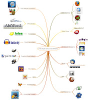

O Open-Source como uma das formas de "Mudar o Mundo"
Publicado em 2009-01-02 15:29:00
Vivemos num mundo e tempos difíceis, mas que não deixam por isso de ser menos interessantes.
A economia global está-se a alterar pela base. As
preocupações ambientais estão na iminência nas grandes empresas - em especial na indústria de tecnologia, onde o mundo está à procura de soluções para uma série de desafios.
A
Computação ubíqua e os telefones inteligentes estão na vanguarda
e o "open-source" está no centro da maioria das tecnologias emergentes e é o seu motor de inovação.
Como pode o código aberto - com os seus instrumentos, bem como os seus princípios - contribuir para fazer a diferença no negócio de computação? Será que em tempos de desaceleração económica em todo o mundo, as empresas se irão virar ainda mais para as oportunidades do código aberto? Será que vai ser
contínuo o sucesso do Linux, Apache, MySQL, e outros projectos de software livre e aberto?
O ano de 2008 foi muito agitado, e 2009 será mais ainda, principalmente em termos de padrões de aquisição de software empresarial e da evolução dos "stacks" e "midllewares" nas empresas. As actuais condições económicas irão certamente favorecer a abordagem a soluções alternativas em matéria de TI - e decerto que a tecnologia de código aberto será um dos grandes vencedores do próximo ano.
Os clientes irão responder aos desafios económicos com mais centralização e aquisições estratégicas na adopção de software livre, o que irá contribuir para melhorar a sua posição negocial face aos actuais líderes da indústria de TI, demonstrando a sua vontade de implementar alternativas "open-source" para aplicações importantes e até estratégicas.
Quanto mais as empresas procuram soluções inovadoras, e de como fazer mais com menos, mais se incrementará a adopção de alternativas "open-source". Áreas significativas da infr
aestrutura irão incluir a adopção de Linux, Virtualização Desktops, "Application Servers" na Gestão de Virtualização e Data-Centers, Motores de Busca, Serviços de Mensagens e Bases de Dados, especialmente para aplicações baseadas em tecnologias PHP, Ajax e Java, que são padrões de indústria e porta relativamente fácil, para integração de outras soluções e plataformas "open-source". Ao nível aplicacional, veremos acelerar adopção de Business Intelligence (BI), Enterprise Content Management (ECM) e Soluções de Gestão de Recursos Empresariais (ERP).
Em suma a inovação e a adopção de software livre caminharão juntos em 2009 e trarão amplos benefícios às empresas que tiverem a coragem de as adoptar. Reflectindo trabalhos e provas-de-conceito efectuadas nos últimos anos, e especialmente em 2008, anexo apresentação com as que considero serem as melhores soluções aplicacionais corporativas disponíveis actualmente em "open-source" e de nível enterprise, que certamente contribuirão para que as empresas possam melhorar os seus rácios de produtividade e simultâneamente melhor servir os seus clientes em 2009.
Resta-me terminar desejando a todos Um Novo Ano Altamente Produtivo e Pleno de Sucessos.
IT Architect, 02Jan2009.
_____________________________________________
Fontes usadas:
{kind=link}
{kind=link}